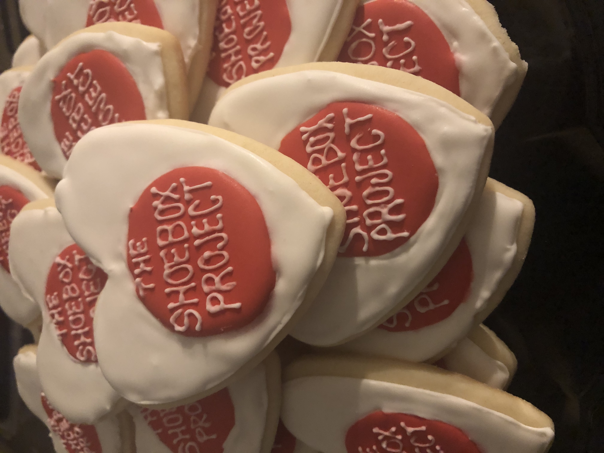

| As a little girl, I always loved helping my Baba in the kitchen. Although I wasn’t very good at cracking eggs at the age of 6, I learned the perfect amount of chocolate chips that were needed to make the best cookies. I always aspired to be a great baker like her and my Aunt. I loved making chocolate chip cookies and cupcakes, but was excited to try something new, Sugar Cookies! I liked that they still had the essence of a cookie,but allowed for creativity like a cupcake. What started out as birthday sugar cookies and holiday gingerbread cookies quickly turned into baking special treats for events with my family and friends. Whether it be thank-you cookies for coworkers, Canada Day celebrations, bridal showers, Sip and Sees, swimwear pop up openings or family reunions, each batch of cookies allowed me to have fun with new techniques and designs. I would love to help you celebrate your next special occasions with decorated Gingerbread or Sugar Cookies, or even something new! If you are looking for a batch of freshly baked chocolate chip cookies, or exciting stuffed cookies, I would love to bake anything you are craving! |

|